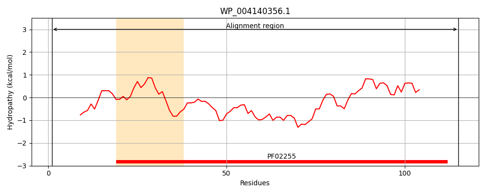
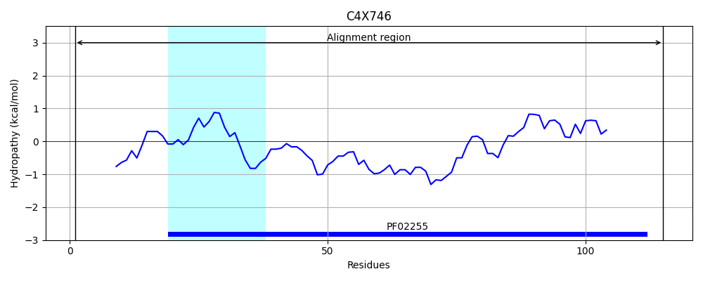
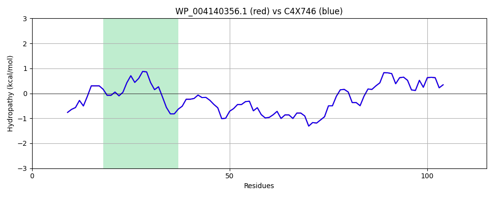

Hit Accession: C4X746
Hit TCID: 4.A.3.2.7
Hit Description: gnl|BL_ORD_ID|2531 gnl|TC-DB|C4X746|4.A.3.2.7 PEP-dependent phosphotransferase enzyme III OS=Klebsiella pneumoniae subsp. pneumoniae NTUH-K2044 GN=celC PE=4 SV=1
Mach Len: 115
e:0.000000
Query TMS Count : 1
Hit TMS Count: 1
TMS-Overlap Score: 1.000000
Predicted Substrates:CHEBI:50668;N-acetyl-beta-D-glucosaminyl-(1->4)-N-acetyl-aldehydo-D-glucosamine
BLAST Alignment:
| Protein Hydropathy Plots: | |
|---|---|
|  |  |
Pairwise Alignment-Hydropathy Plot: | |
|  | |